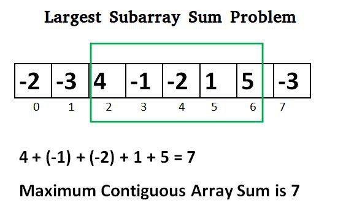

Initialization:
1.Initialize two variables:
current_sum to the value of the first element of the array.
max_sum to the same initial value as current_sum.
2.Iteration:
Traverse through the array starting from the second element.

3.Update current_sum:
For each element in the array, update current_sum as:
current_sum = max(current_element, current_sum + current_element)
This step decides whether to start a new subarray with the current element or to add the current element to the existing subarray.
Update max_sum:
4.Update max_sum as:
max_sum = max(max_sum, current_sum)
This keeps track of the maximum sum encountered so far.
5.Result:
After iterating through all elements, max_sum will contain the maximum sum of any contiguous subarray within the array.